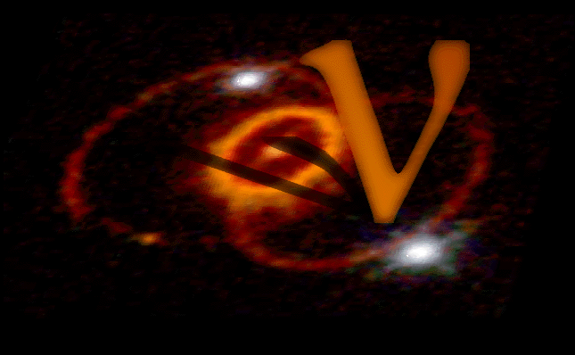

Getting a SNEWS Alert

SNEWS Alert Mailing List Sign Up
If you're interested in being notified about the occurrence
of a neutrino burst from SNEWS, please click here
to sign up.
 Amateur astronomers - Please look here to
sign up for Sky
and Telescope's AstroAlert
service.
Amateur astronomers - Please look here to
sign up for Sky
and Telescope's AstroAlert
service.
SNEWS Alarm PGP Key
Should we issue a supernova alarm, it will be signed with
this
PGP key, so you can be assured that it's really coming from us.
If you get a message not properly signed
with this key, then it is not from us and should be ignored!
Here are some HOWTO's
for signature verification on various email clients. See, for instance
the GNU Privacy Guard
site for an open-source solution to email signatures, or the
PGP
site for the commercial (but free for personal use) solution.
The SNEWS key is also on the worldwide PGP
key server so your properly configured software can check it automatically.
(Note that AstroAlert messages are not signed with this
key, only direct SNEWS alerts; Sky and Telescope receives the direct
SNEWS alert and will do the checking before sending an AstroAlert message.)